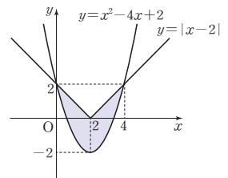
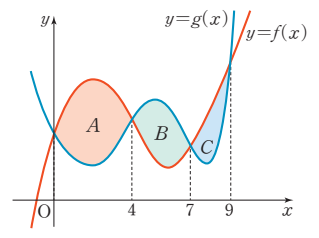
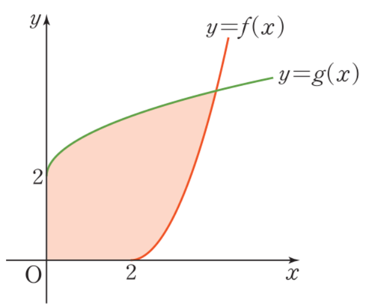
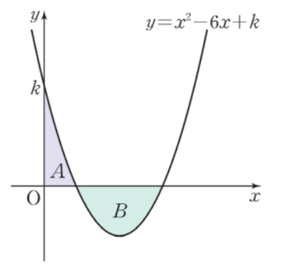

2026학년도 2학기 | 미적분 I
미적분 I 수업 학습지
단원: III-2. 정적분의 활용
29차시: 중단원 마무리
01. 실전 훈련 (Textbook Mastery)
💡 비상 미적분 I 교과서 중단원 마무리(P.135~P.137) 13문항 + 익힘책 P.158 보강 1문항 = 14문항을 그대로 학습지화. 기초 1~3 · 기본 4~12 · 도전 13·14 (서술형 킬러)
[기초-곡선과 \(x\)축 사이의 넓이]
1. 곡선 \(y = x^2 - 4x - 5\)와 \(x\)축으로 둘러싸인 도형의 넓이를 구하시오. (교과서 P.135 중단원 기초 01번)
🎯 풀이 전략 보기
💡 전략 힌트: ① 영점: \(x^2 - 4x - 5 = (x - 5)(x + 1) = 0 \Rightarrow x = -1, 5\). ② \([-1, 5]\)에서 \(y \leq 0\). ③ \(S = \int_{-1}^{5}(-x^2 + 4x + 5)\,dx = [-\tfrac{1}{3}x^3 + 2x^2 + 5x]_{-1}^{5} = (-\tfrac{125}{3} + 50 + 25) - (\tfrac{1}{3} + 2 - 5) = \tfrac{100}{3} - (-\tfrac{8}{3}) = \tfrac{108}{3} = 36\). 답: \(36\).
[기초-두 곡선 사이 넓이]
2. 두 곡선 \(y = x^2 - 6x + 9\), \(y = -2x^2 + 6x\)로 둘러싸인 도형의 넓이를 구하시오. (교과서 P.135 중단원 기초 02번)
🎯 풀이 전략 보기
💡 전략 힌트: ① 교점: \(x^2 - 6x + 9 = -2x^2 + 6x \Rightarrow 3x^2 - 12x + 9 = 0 \Rightarrow x^2 - 4x + 3 = (x-1)(x-3) = 0 \Rightarrow x = 1, 3\). ② \([1, 3]\)에서 \(-2x^2 + 6x \geq x^2 - 6x + 9\). ③ 1/6 공식: \(S = \int_1^3 \{-3x^2 + 12x - 9\}\,dx = -3\int_1^3 (x-1)(x-3)\,dx = -3 \cdot \left(-\tfrac{(3-1)^3}{6}\right) = -3 \cdot (-\tfrac{4}{3}) = 4\). 답: \(4\).
[기초-위치·변위·이동거리 (속도와 거리)]
3. 좌표가 \(-1\)인 점에서 출발하여 수직선 위를 움직이는 점 P의 시각 \(t\)에서 속도가 \( v(t) = t^2 - 4t + 3 \)일 때, 다음을 구하시오. (교과서 P.135 중단원 기초 03번)
(1) 시각 \(t = 2\)에서 점 P의 위치
(2) 시각 \(t = 0\)에서 \(t = 3\)까지 점 P의 위치의 변화량
(3) 시각 \(t = 0\)에서 \(t = 2\)까지 점 P가 움직인 거리
(2) 시각 \(t = 0\)에서 \(t = 3\)까지 점 P의 위치의 변화량
(3) 시각 \(t = 0\)에서 \(t = 2\)까지 점 P가 움직인 거리
🎯 풀이 전략 보기
💡 전략 힌트: ① \(\int v\,dt = \tfrac{1}{3}t^3 - 2t^2 + 3t + C\).
(1) 위치 \(= -1 + \int_0^2 v(t)\,dt = -1 + [\tfrac{1}{3}t^3 - 2t^2 + 3t]_0^2 = -1 + (\tfrac{8}{3} - 8 + 6) = -1 + \tfrac{2}{3} = -\tfrac{1}{3}\).
(2) 변화량 \(= \int_0^3 v(t)\,dt = [\tfrac{1}{3}t^3 - 2t^2 + 3t]_0^3 = 9 - 18 + 9 = 0\).
(3) 이동거리 \(= \int_0^2 |v(t)|\,dt\). \(v(t) = (t - 1)(t - 3) = 0 \Rightarrow t = 1, 3\). \([0, 1]\)에서 \(v \geq 0\), \([1, 2]\)에서 \(v \leq 0\). \(\int_0^1 v\,dt = \tfrac{1}{3} - 2 + 3 = \tfrac{4}{3}\). \(\int_1^2 (-v)\,dt = -[\tfrac{8}{3} - 8 + 6] + [\tfrac{4}{3}] = -\tfrac{2}{3} + \tfrac{4}{3} = \tfrac{2}{3}\). 합: \(\tfrac{4}{3} + \tfrac{2}{3} = 2\). 답: (1) \(-\tfrac{1}{3}\) (2) \(0\) (3) \(2\).
(1) 위치 \(= -1 + \int_0^2 v(t)\,dt = -1 + [\tfrac{1}{3}t^3 - 2t^2 + 3t]_0^2 = -1 + (\tfrac{8}{3} - 8 + 6) = -1 + \tfrac{2}{3} = -\tfrac{1}{3}\).
(2) 변화량 \(= \int_0^3 v(t)\,dt = [\tfrac{1}{3}t^3 - 2t^2 + 3t]_0^3 = 9 - 18 + 9 = 0\).
(3) 이동거리 \(= \int_0^2 |v(t)|\,dt\). \(v(t) = (t - 1)(t - 3) = 0 \Rightarrow t = 1, 3\). \([0, 1]\)에서 \(v \geq 0\), \([1, 2]\)에서 \(v \leq 0\). \(\int_0^1 v\,dt = \tfrac{1}{3} - 2 + 3 = \tfrac{4}{3}\). \(\int_1^2 (-v)\,dt = -[\tfrac{8}{3} - 8 + 6] + [\tfrac{4}{3}] = -\tfrac{2}{3} + \tfrac{4}{3} = \tfrac{2}{3}\). 합: \(\tfrac{4}{3} + \tfrac{2}{3} = 2\). 답: (1) \(-\tfrac{1}{3}\) (2) \(0\) (3) \(2\).
[기본-넓이 조건에서 계수 결정]
4. 곡선 \(y = ax^2(x - 3)\)과 \(x\)축으로 둘러싸인 도형의 넓이가 \(27\)일 때, 양수 \(a\)의 값을 구하시오. (교과서 P.136 중단원 기본 04번)
🎯 풀이 전략 보기
💡 전략 힌트: ① 영점: \(x = 0, 3\). ② \([0, 3]\)에서 \(x^2(x - 3) \leq 0\) (\(a \gt 0\)) \(\Rightarrow y \leq 0\). ③ \(S = a\int_0^3 (3x^2 - x^3)\,dx = a[x^3 - \tfrac{1}{4}x^4]_0^3 = a(27 - \tfrac{81}{4}) = \tfrac{27a}{4} = 27 \Rightarrow a = 4\). 답: \(4\).
[기본-접선과 곡선 사이의 넓이]
5. 곡선 \(y = x^3 + 1\)과 이 곡선 위의 점 \((1, 2)\)에서의 접선으로 둘러싸인 도형의 넓이를 구하시오. (교과서 P.136 중단원 기본 05번)
🎯 풀이 전략 보기
💡 전략 힌트: ① 접선 기울기 \(y'(1) = 3\). 접선: \(y - 2 = 3(x - 1) \Rightarrow y = 3x - 1\). ② 교점: \(x^3 + 1 = 3x - 1 \Rightarrow x^3 - 3x + 2 = (x - 1)^2(x + 2) = 0 \Rightarrow x = 1, -2\). ③ \([-2, 1]\)에서 \(x^3 + 1 \leq 3x - 1\)임을 확인 (\(x = 0\) 대입: \(1 \leq -1\)? 거짓. 다시: \(x = 0 \Rightarrow x^3 + 1 = 1, 3x - 1 = -1\), \(1 \geq -1\)이므로 곡선이 위). \(\int_{-2}^{1}(x^3 + 1 - 3x + 1)\,dx = \int_{-2}^{1}(x^3 - 3x + 2)\,dx = [\tfrac{1}{4}x^4 - \tfrac{3}{2}x^2 + 2x]_{-2}^{1} = (\tfrac{1}{4} - \tfrac{3}{2} + 2) - (4 - 6 - 4) = \tfrac{3}{4} - (-6) = \tfrac{27}{4}\). 답: \(\tfrac{27}{4}\).
[기본-x축에 의한 넓이 이등분]
6. 다음 그림과 같이 곡선 \(y = x^2 - 2x\)와 직선 \(y = ax\)로 둘러싸인 도형의 넓이가 \(x\)축에 의하여 이등분될 때, \((a + 2)^3\)의 값을 구하시오. (단, \(a \gt 0\)) (교과서 P.136 중단원 기본 06번)

🎯 풀이 전략 보기
💡 전략 힌트: ① 교점: \(x^2 - 2x = ax \Rightarrow x^2 - (a+2)x = 0 \Rightarrow x = 0, a+2\). ② 전체 넓이 \(S_{\text{전}} = \int_0^{a+2}(ax - x^2 + 2x)\,dx = \int_0^{a+2}((a+2)x - x^2)\,dx = \tfrac{(a+2)^3}{6}\) (1/6 공식). ③ \(x\)축 아래 부분 (포물선과 \(x\)축이 둘러싼 \([0, 2]\) 영역) \(S_{\text{하}} = \int_0^2 (2x - x^2)\,dx = \tfrac{4}{3}\). ④ 이등분 조건: \(S_{\text{전}} = 2 S_{\text{하}} \Rightarrow \tfrac{(a+2)^3}{6} = 2 \cdot \tfrac{4}{3} = \tfrac{8}{3} \Rightarrow (a+2)^3 = 16\). 답: \(16\).
[기본-이차함수와 절댓값 함수 사이의 넓이]
7. 다음 그림과 같이 두 함수 \(y = x^2 - 4x + 2\), \(y = |x - 2|\)의 그래프로 둘러싸인 도형의 넓이를 구하시오. (교과서 P.136 중단원 기본 07번)

🎯 풀이 전략 보기
💡 전략 힌트: ① \(x \geq 2\): \(|x-2| = x - 2\). 교점: \(x^2 - 4x + 2 = x - 2 \Rightarrow x^2 - 5x + 4 = (x-1)(x-4) = 0\). \(x \geq 2\) 조건에서 \(x = 4\). ② \(x \lt 2\): \(|x-2| = -(x-2) = -x + 2\). 교점: \(x^2 - 4x + 2 = -x + 2 \Rightarrow x^2 - 3x = x(x-3) = 0\). \(x \lt 2\) 조건에서 \(x = 0\). ③ 도형 영역 \([0, 4]\). 두 부분 \([0, 2]\)와 \([2, 4]\) 분할. \(\int_0^2 (-x + 2 - x^2 + 4x - 2)\,dx + \int_2^4 (x - 2 - x^2 + 4x - 2)\,dx = \int_0^2 (-x^2 + 3x)\,dx + \int_2^4 (-x^2 + 5x - 4)\,dx\).
앞: \([-\tfrac{1}{3}x^3 + \tfrac{3}{2}x^2]_0^2 = -\tfrac{8}{3} + 6 = \tfrac{10}{3}\).
뒤: \([-\tfrac{1}{3}x^3 + \tfrac{5}{2}x^2 - 4x]_2^4 = (-\tfrac{64}{3} + 40 - 16) - (-\tfrac{8}{3} + 10 - 8) = \tfrac{8}{3} - (-\tfrac{2}{3}) = \tfrac{10}{3}\).
합: \(\tfrac{20}{3}\). 답: \(\tfrac{20}{3}\).
앞: \([-\tfrac{1}{3}x^3 + \tfrac{3}{2}x^2]_0^2 = -\tfrac{8}{3} + 6 = \tfrac{10}{3}\).
뒤: \([-\tfrac{1}{3}x^3 + \tfrac{5}{2}x^2 - 4x]_2^4 = (-\tfrac{64}{3} + 40 - 16) - (-\tfrac{8}{3} + 10 - 8) = \tfrac{8}{3} - (-\tfrac{2}{3}) = \tfrac{10}{3}\).
합: \(\tfrac{20}{3}\). 답: \(\tfrac{20}{3}\).
[기본-세 도형 넓이로 정적분 계산]
8. 다음 그림과 같이 두 곡선 \(y = f(x)\), \(y = g(x)\)로 둘러싸인 세 도형의 넓이를 각각 \(A, B, C\)라고 할 때, \(A = 12, B = 6, C = 5\)이다. 정적분 \(\displaystyle\int_0^9 \{f(x) - g(x)\}\,dx\)의 값을 구하시오. (교과서 P.136 중단원 기본 08번)

🎯 풀이 전략 보기
💡 전략 힌트: 정적분 \(\int (f - g)\,dx\)는 부호 있는 면적의 합. ① \([0, 4]\)에서 \(f \geq g \Rightarrow \int (f-g) = +A = 12\). ② \([4, 7]\)에서 \(f \leq g \Rightarrow \int (f-g) = -B = -6\). ③ \([7, 9]\)에서 \(f \geq g \Rightarrow \int (f-g) = +C = 5\). 합: \(12 - 6 + 5 = 11\). 답: \(11\).
[기본-역함수 그래프와 둘러싸인 넓이]
9. 다음 그림과 같이 함수 \( f(x) = (x - 2)^2 \) (\(x \geq 2\))의 역함수를 \(g(x)\)라고 할 때, 두 곡선 \(y = f(x), y = g(x)\)와 \(x\)축 및 \(y\)축으로 둘러싸인 도형의 넓이를 구하시오. (교과서 P.137 중단원 기본 09번)

🎯 풀이 전략 보기
💡 전략 힌트: ① \(f(x) = (x - 2)^2\) (\(x \geq 2\))의 역함수: \(y = (x-2)^2 \Rightarrow x - 2 = \sqrt{y}\) (\(x \geq 2\)) \(\Rightarrow g(y) = \sqrt{y} + 2\). 즉 \(g(x) = \sqrt{x} + 2\) (\(x \geq 0\)).
② 교점: \(f, g\) 모두 \(y = x\)에 대칭. \((x - 2)^2 = x \Rightarrow x^2 - 5x + 4 = 0 \Rightarrow x = 1, 4\). \(x \geq 2\)에서 \(x = 4\). 즉 \(f(4) = g(4) = 4\).
③ 영역 분할: \(x \in [0, 2]\)에서는 윗변 \(g(x)\), 아랫변 \(x\)축. \(x \in [2, 4]\)에서는 윗변 \(g(x)\), 아랫변 \(f(x)\).
④ \(S = \int_0^2 (\sqrt{x} + 2)\,dx + \int_2^4 (\sqrt{x} + 2 - (x-2)^2)\,dx\).
앞: \([\tfrac{2}{3}x^{3/2} + 2x]_0^2 = \tfrac{4\sqrt{2}}{3} + 4\).
뒤: \([\tfrac{2}{3}x^{3/2} + 2x - \tfrac{(x-2)^3}{3}]_2^4 = (\tfrac{16}{3} + 8 - \tfrac{8}{3}) - (\tfrac{4\sqrt{2}}{3} + 4 - 0) = \tfrac{32}{3} - \tfrac{4\sqrt{2}}{3} - 4 = \tfrac{20}{3} - \tfrac{4\sqrt{2}}{3}\).
합: \((\tfrac{4\sqrt{2}}{3} + 4) + (\tfrac{20}{3} - \tfrac{4\sqrt{2}}{3} - 4) \cdot 1 = \tfrac{20}{3} + 4 = \tfrac{32}{3}\). 답: \(\tfrac{32}{3}\).
② 교점: \(f, g\) 모두 \(y = x\)에 대칭. \((x - 2)^2 = x \Rightarrow x^2 - 5x + 4 = 0 \Rightarrow x = 1, 4\). \(x \geq 2\)에서 \(x = 4\). 즉 \(f(4) = g(4) = 4\).
③ 영역 분할: \(x \in [0, 2]\)에서는 윗변 \(g(x)\), 아랫변 \(x\)축. \(x \in [2, 4]\)에서는 윗변 \(g(x)\), 아랫변 \(f(x)\).
④ \(S = \int_0^2 (\sqrt{x} + 2)\,dx + \int_2^4 (\sqrt{x} + 2 - (x-2)^2)\,dx\).
앞: \([\tfrac{2}{3}x^{3/2} + 2x]_0^2 = \tfrac{4\sqrt{2}}{3} + 4\).
뒤: \([\tfrac{2}{3}x^{3/2} + 2x - \tfrac{(x-2)^3}{3}]_2^4 = (\tfrac{16}{3} + 8 - \tfrac{8}{3}) - (\tfrac{4\sqrt{2}}{3} + 4 - 0) = \tfrac{32}{3} - \tfrac{4\sqrt{2}}{3} - 4 = \tfrac{20}{3} - \tfrac{4\sqrt{2}}{3}\).
합: \((\tfrac{4\sqrt{2}}{3} + 4) + (\tfrac{20}{3} - \tfrac{4\sqrt{2}}{3} - 4) \cdot 1 = \tfrac{20}{3} + 4 = \tfrac{32}{3}\). 답: \(\tfrac{32}{3}\).
[기본-구간별 속도 함수 + 위치 누적]
10. 지면에 정지해 있던 드론이 지면과 수직 방향으로 출발한 지 \(t\)초 후의 속도를 \(v(t)\,\text{m/s}\)라고 하면 \[ v(t) = \begin{cases} \tfrac{1}{2}t & (0 \leq t \leq 10) \\ 15 - t & (10 \leq t \leq 15) \end{cases} \]라고 한다. 출발한 지 \(12\)초 후의 드론의 높이를 구하시오. (교과서 P.137 중단원 기본 10번)
🎯 풀이 전략 보기
💡 전략 힌트: \([0, 10]\)과 \([10, 12]\)에서 모두 \(v \geq 0\)이므로 높이 \(= \int_0^{12} v(t)\,dt = \int_0^{10}\tfrac{1}{2}t\,dt + \int_{10}^{12}(15 - t)\,dt\). 앞: \([\tfrac{1}{4}t^2]_0^{10} = 25\). 뒤: \([15t - \tfrac{1}{2}t^2]_{10}^{12} = (180 - 72) - (150 - 50) = 108 - 100 = 8\). 합: \(25 + 8 = 33\). 답: \(33\,\text{m}\).
[기본-원점으로 돌아오는 시각]
11. 원점을 출발하여 수직선 위를 움직이는 점 P의 시각 \(t\)에서 속도가 \(v(t) = 4t^2 - 2t^3\)일 때, 점 P가 다시 원점으로 돌아오는 시각을 구하시오. (교과서 P.137 중단원 기본 11번)
🎯 풀이 전략 보기
💡 전략 힌트: 위치 \(x(t) = \int_0^t (4s^2 - 2s^3)\,ds = \tfrac{4}{3}t^3 - \tfrac{1}{2}t^4\). 원점 복귀: \(x(t) = 0 \Rightarrow t^3(\tfrac{4}{3} - \tfrac{1}{2}t) = 0 \Rightarrow t = 0\) 또는 \(t = \tfrac{8}{3}\). 답: \(t = \tfrac{8}{3}\).
[기본-이차함수 + 넓이 비 \(A:B = 1:2\)]
12. 이차함수 \(f(x) = x^2 - 6x + k\)에 대하여 다음 그림과 같이 곡선 \(y = f(x)\)와 \(x\)축 및 \(y\)축으로 둘러싸인 도형의 넓이를 \(A\)라 하고, 곡선 \(y = f(x)\)와 \(x\)축으로 둘러싸인 도형의 넓이를 \(B\)라고 할 때, \(A : B = 1 : 2\)이다. 이때 실수 \(k\)의 값을 구하시오. (단, \(0 \lt k \lt 9\)) (교과서 P.137 중단원 기본 12번)

🎯 풀이 전략 보기
💡 전략 힌트: ① \(f(x) = 0\)의 두 근을 \(\alpha, \beta\) (\(0 \lt \alpha \lt \beta\))라 하면 \(\alpha + \beta = 6\), \(\alpha\beta = k\). 한편 \(k = 6\alpha - \alpha^2\) (\(f(\alpha) = 0\)).
② \(A = \displaystyle\int_0^\alpha f(x)\,dx\) ( \([0, \alpha]\)에서 \(f \geq 0\) ). \([\tfrac{1}{3}x^3 - 3x^2 + kx]_0^\alpha = \tfrac{\alpha^3}{3} - 3\alpha^2 + k\alpha\). \(k = 6\alpha - \alpha^2\) 대입 → \(A = -\tfrac{2\alpha^3}{3} + 3\alpha^2 = \tfrac{\alpha^2(9 - 2\alpha)}{3}\).
③ \(B = \displaystyle\int_\alpha^\beta \{-f(x)\}\,dx = \tfrac{(\beta - \alpha)^3}{6}\) (1/6 공식). \(\beta - \alpha = 6 - 2\alpha\)이므로 \(B = \tfrac{(6 - 2\alpha)^3}{6} = \tfrac{4(3 - \alpha)^3}{3}\).
④ 비례 조건 \(A : B = 1 : 2 \Rightarrow 2A = B\): \(\tfrac{2\alpha^2(9 - 2\alpha)}{3} = \tfrac{4(3 - \alpha)^3}{3} \Rightarrow \alpha^2(9 - 2\alpha) = 2(3 - \alpha)^3\). 전개 정리: \(9\alpha^2 - 2\alpha^3 = 2(27 - 27\alpha + 9\alpha^2 - \alpha^3) = 54 - 54\alpha + 18\alpha^2 - 2\alpha^3 \Rightarrow 9\alpha^2 = 54 - 54\alpha + 18\alpha^2 \Rightarrow 9\alpha^2 - 54\alpha + 54 = 0 \Rightarrow \alpha^2 - 6\alpha + 6 = 0 \Rightarrow \alpha = 3 - \sqrt{3}\) (작은 근).
⑤ \(k = 6\alpha - \alpha^2 = 6(3 - \sqrt{3}) - (3 - \sqrt{3})^2 = 18 - 6\sqrt{3} - (12 - 6\sqrt{3}) = 6\). 답: \(k = 6\) (\(0 \lt k \lt 9\) 조건 만족, 검산: \(\alpha \approx 1.27, \beta \approx 4.73, A \approx 3.46, B \approx 6.93, A:B = 1:2\) ✓).
② \(A = \displaystyle\int_0^\alpha f(x)\,dx\) ( \([0, \alpha]\)에서 \(f \geq 0\) ). \([\tfrac{1}{3}x^3 - 3x^2 + kx]_0^\alpha = \tfrac{\alpha^3}{3} - 3\alpha^2 + k\alpha\). \(k = 6\alpha - \alpha^2\) 대입 → \(A = -\tfrac{2\alpha^3}{3} + 3\alpha^2 = \tfrac{\alpha^2(9 - 2\alpha)}{3}\).
③ \(B = \displaystyle\int_\alpha^\beta \{-f(x)\}\,dx = \tfrac{(\beta - \alpha)^3}{6}\) (1/6 공식). \(\beta - \alpha = 6 - 2\alpha\)이므로 \(B = \tfrac{(6 - 2\alpha)^3}{6} = \tfrac{4(3 - \alpha)^3}{3}\).
④ 비례 조건 \(A : B = 1 : 2 \Rightarrow 2A = B\): \(\tfrac{2\alpha^2(9 - 2\alpha)}{3} = \tfrac{4(3 - \alpha)^3}{3} \Rightarrow \alpha^2(9 - 2\alpha) = 2(3 - \alpha)^3\). 전개 정리: \(9\alpha^2 - 2\alpha^3 = 2(27 - 27\alpha + 9\alpha^2 - \alpha^3) = 54 - 54\alpha + 18\alpha^2 - 2\alpha^3 \Rightarrow 9\alpha^2 = 54 - 54\alpha + 18\alpha^2 \Rightarrow 9\alpha^2 - 54\alpha + 54 = 0 \Rightarrow \alpha^2 - 6\alpha + 6 = 0 \Rightarrow \alpha = 3 - \sqrt{3}\) (작은 근).
⑤ \(k = 6\alpha - \alpha^2 = 6(3 - \sqrt{3}) - (3 - \sqrt{3})^2 = 18 - 6\sqrt{3} - (12 - 6\sqrt{3}) = 6\). 답: \(k = 6\) (\(0 \lt k \lt 9\) 조건 만족, 검산: \(\alpha \approx 1.27, \beta \approx 4.73, A \approx 3.46, B \approx 6.93, A:B = 1:2\) ✓).
[도전-두 점 P, Q가 만나는 횟수 (서술형)]
13. 점 P는 원점에서, 점 Q는 좌표가 \(-3\)인 점에서 동시에 출발하여 수직선 위를 움직이고 있다. 두 점 P, Q의 시각 \(t\)에서 속도가 각각 \[ v_{\text P}(t) = 4t + 5,\qquad v_{\text Q}(t) = 3t^2 - 8t + 14 \] 일 때, 두 점 P, Q가 만나는 횟수를 풀이 과정과 함께 구하시오. (교과서 P.137 중단원 도전 13번)
🎯 서술형 풀이 전략 보기
💡 전략 (5단계):
① 위치 함수: \(x_{\text P}(t) = 0 + \int_0^t (4s + 5)\,ds = 2t^2 + 5t\). \(x_{\text Q}(t) = -3 + \int_0^t (3s^2 - 8s + 14)\,ds = -3 + t^3 - 4t^2 + 14t\).
② 만남 조건: \(x_{\text P}(t) = x_{\text Q}(t) \Rightarrow 2t^2 + 5t = -3 + t^3 - 4t^2 + 14t \Rightarrow t^3 - 6t^2 + 9t - 3 = 0\).
③ 함수 \(h(t) = t^3 - 6t^2 + 9t - 3\)의 부호 분석: \(h'(t) = 3t^2 - 12t + 9 = 3(t - 1)(t - 3)\). \(t = 1\) 극대 \(h(1) = 1 - 6 + 9 - 3 = 1 \gt 0\). \(t = 3\) 극소 \(h(3) = 27 - 54 + 27 - 3 = -3 \lt 0\).
④ \(h(0) = -3 \lt 0\). \(h(1) = 1 \gt 0\), \(h(3) = -3 \lt 0\), \(h(5) = 125 - 150 + 45 - 3 = 17 \gt 0\). 중간값 정리: \([0, 1]\), \([1, 3]\), \([3, 5]\) 각각 한 실근. \(t \geq 0\) 조건에서 총 3개.
⑤ 답: 두 점이 만나는 횟수는 \(3\)회.
채점 포인트: 위치 함수 도출 / 만남 방정식 \(h(t) = 0\) / \(h\)의 증감 분석 / 중간값 정리 적용 / 최종 횟수.
① 위치 함수: \(x_{\text P}(t) = 0 + \int_0^t (4s + 5)\,ds = 2t^2 + 5t\). \(x_{\text Q}(t) = -3 + \int_0^t (3s^2 - 8s + 14)\,ds = -3 + t^3 - 4t^2 + 14t\).
② 만남 조건: \(x_{\text P}(t) = x_{\text Q}(t) \Rightarrow 2t^2 + 5t = -3 + t^3 - 4t^2 + 14t \Rightarrow t^3 - 6t^2 + 9t - 3 = 0\).
③ 함수 \(h(t) = t^3 - 6t^2 + 9t - 3\)의 부호 분석: \(h'(t) = 3t^2 - 12t + 9 = 3(t - 1)(t - 3)\). \(t = 1\) 극대 \(h(1) = 1 - 6 + 9 - 3 = 1 \gt 0\). \(t = 3\) 극소 \(h(3) = 27 - 54 + 27 - 3 = -3 \lt 0\).
④ \(h(0) = -3 \lt 0\). \(h(1) = 1 \gt 0\), \(h(3) = -3 \lt 0\), \(h(5) = 125 - 150 + 45 - 3 = 17 \gt 0\). 중간값 정리: \([0, 1]\), \([1, 3]\), \([3, 5]\) 각각 한 실근. \(t \geq 0\) 조건에서 총 3개.
⑤ 답: 두 점이 만나는 횟수는 \(3\)회.
채점 포인트: 위치 함수 도출 / 만남 방정식 \(h(t) = 0\) / \(h\)의 증감 분석 / 중간값 정리 적용 / 최종 횟수.
[도전-두 부분 넓이가 서로 같은 조건 (서술형)]
14. 곡선 \(y = x(x - a)(x - b)\)와 \(x\)축으로 둘러싸인 두 부분의 넓이가 서로 같을 때, \(\dfrac{b}{a}\)의 값을 풀이 과정과 함께 구하시오. (단, \(0 \lt a \lt b\)) (교과서 익힘책 P.158 도전 06번 — 보강)
🎯 서술형 풀이 전략 보기
💡 전략 (5단계):
① 영점: \(x = 0, a, b\). 두 부분: \([0, a]\)와 \([a, b]\).
② 부호 분석: \(0 \lt x \lt a\)에서 \(x \gt 0\), \(x - a \lt 0\), \(x - b \lt 0 \Rightarrow y \gt 0\) (위 영역 \(S_1\)). \(a \lt x \lt b\)에서 \(x \gt 0\), \(x - a \gt 0\), \(x - b \lt 0 \Rightarrow y \lt 0\) (아래 영역 \(S_2\)).
③ 두 부분 넓이가 같으므로 \(\int_0^a y\,dx + \int_a^b y\,dx = S_1 - S_2 = 0\) (부호 있는 합). 즉 \(\int_0^b x(x-a)(x-b)\,dx = 0\).
④ 전개: \(\int_0^b (x^3 - (a+b)x^2 + abx)\,dx = [\tfrac{1}{4}x^4 - \tfrac{a+b}{3}x^3 + \tfrac{ab}{2}x^2]_0^b = \tfrac{b^4}{4} - \tfrac{(a+b)b^3}{3} + \tfrac{ab^3}{2}\).
⑤ \(b^3 \ne 0\)이므로 \(b^3\)로 나누고 정리: \(\tfrac{b}{4} - \tfrac{a+b}{3} + \tfrac{a}{2} = 0\). 공통분모 \(12\): \(3b - 4(a+b) + 6a = 0 \Rightarrow -b + 2a = 0 \Rightarrow b = 2a\). 따라서 \(\dfrac{b}{a} = 2\).
채점 포인트: 영점 분석 / 부호 분기 / 두 넓이 같다는 조건 → 부호 있는 정적분 \(=0\) / 다항식 전개 + 적분 / \(b/a\) 결정.
① 영점: \(x = 0, a, b\). 두 부분: \([0, a]\)와 \([a, b]\).
② 부호 분석: \(0 \lt x \lt a\)에서 \(x \gt 0\), \(x - a \lt 0\), \(x - b \lt 0 \Rightarrow y \gt 0\) (위 영역 \(S_1\)). \(a \lt x \lt b\)에서 \(x \gt 0\), \(x - a \gt 0\), \(x - b \lt 0 \Rightarrow y \lt 0\) (아래 영역 \(S_2\)).
③ 두 부분 넓이가 같으므로 \(\int_0^a y\,dx + \int_a^b y\,dx = S_1 - S_2 = 0\) (부호 있는 합). 즉 \(\int_0^b x(x-a)(x-b)\,dx = 0\).
④ 전개: \(\int_0^b (x^3 - (a+b)x^2 + abx)\,dx = [\tfrac{1}{4}x^4 - \tfrac{a+b}{3}x^3 + \tfrac{ab}{2}x^2]_0^b = \tfrac{b^4}{4} - \tfrac{(a+b)b^3}{3} + \tfrac{ab^3}{2}\).
⑤ \(b^3 \ne 0\)이므로 \(b^3\)로 나누고 정리: \(\tfrac{b}{4} - \tfrac{a+b}{3} + \tfrac{a}{2} = 0\). 공통분모 \(12\): \(3b - 4(a+b) + 6a = 0 \Rightarrow -b + 2a = 0 \Rightarrow b = 2a\). 따라서 \(\dfrac{b}{a} = 2\).
채점 포인트: 영점 분석 / 부호 분기 / 두 넓이 같다는 조건 → 부호 있는 정적분 \(=0\) / 다항식 전개 + 적분 / \(b/a\) 결정.
02. 중단원 성찰 (Exit Ticket)
스마트폰으로 우측 QR코드를 스캔하여, 정적분의 활용 단원 전체에 대한 자기점검을 작성해 제출한다.